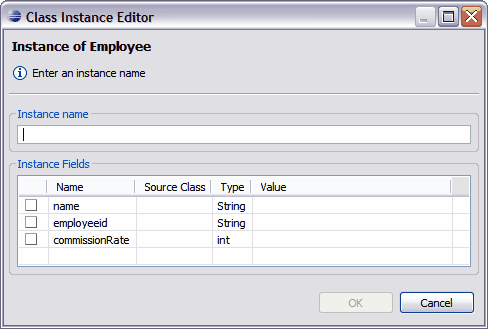

Tigerstripe Workbench provides a drag-and-drop development environment for creating a class instance. Complete the following procedure, to create a class instance.
Note: Before you can create a class instance using the Instance Diagram Editor, you will first need to create a Class Diagram. For more information about creating a Class Diagram using the Class Diagram Editor, refer to The Class Diagram Editor.

When selecting instance fields in the Class Instance Editor, you can directly enter values in the Value text box without selecting the associated check-box and the value will be populated. However, if you do not enter a value in the Value text box and do not select the check-box, the instance field will not populate in the diagram.
The Instance Diagram Editor only displays the associations that can be created for the given source and the selected target. The editor limits the type of association links that you can create to only those links possible for the endpoints being created.
The editor also enforces constraints on endpoint multiplicity defined for the selected instance type and prevents the creation of abstract associations. If the creation of a new association violates the underlying constraints, the Instance Diagram Editor provides you with the option of replacing the current instance with the new instance being constructed.
Note: The creation of an association class instance results in the creation of two association instances and a class instance that link the endpoint for which the association class instance is being created.
Note: To delete and association link, select the association and press DELETE.
 Setting Class Instance Attributes
Setting Class Instance Attributes

© copyright 2005, 2006, 2007 Cisco Systems, Inc. - All rights reserved